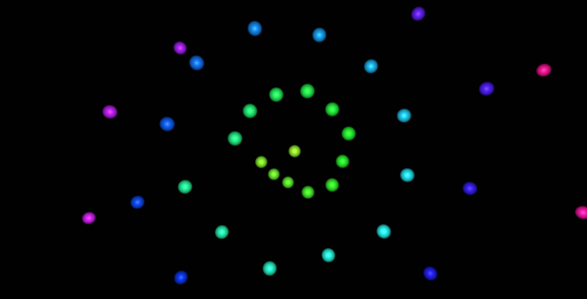

Web Music Visualizer
Project Description
Using Web Audio API, Three.js, Unity3D (for prototyping) and WebGL, this project helps see music. I was able to turn sounds to bits and the bits into colors and movement. It was a fun project in Three.js to explore what a browser could do. Please view in latest version of Chrome, Firefox, or Safari.
Go to Site
